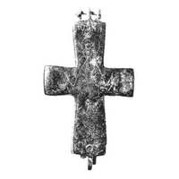
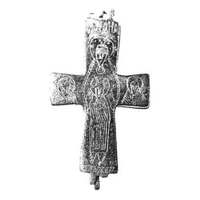

Catalog › CE-0254 · KOR2003-I.2.13
Encolpion gravat întreg cu capete drepte; Sf. Ioan Orantă pe față, Maica Domnului cu Pruncul pe revers
sec. X–XI (901–1100) · Kuceakiv, regiunea Kiev (raionul Pereiaslav-Hmelnîțkîi), Ucraina · Muzeul Național de Istorie al Ucrainei, Kiev, inv. В-960 (уп. 7348)
double-sided reliquary cross (enkolpion), aramă; c. X–XI (901–1100); found at Kuceakiv, regiunea Kiev (raionul Pereiaslav-Hmelnîțkîi), Ucraina; kept at Muzeul Național de Istorie al Ucrainei, Kiev.




Identificare
- Categorie
- Encolpion bivalv (relicvar)
- Material
- Aramă
- Tehnică
- Turnare în relief; Gravare (incizie)
- Stare
- Întreagă
- Dimensiuni
- Î 68 × L 45 × Gr 9 mm
Iconografie
- Avers
- Sf. Ioan
- Descriere avers
- Pe valva de față imaginea gravată în picioare a Sf. Ioan cu mâinile ridicate (tipul Orantă). Inscripție gravată deasupra capului lui Ioan – HOANH.
- Revers
- Maica Domnului cu Pruncul; Neidentificat
- Descriere revers
- Pe valva de revers imaginea gravată în picioare a Maicii Domnului cu Pruncul în fața ei și imagini frontale bust ale unor sfinți pe capetele laterale. Inscripție gravată deasupra capului Maicii Domnului – [ ]ANAHA.
- Inscripții
- HOANH; [ ]ANAHA
- Limba
- Greacă
Datare și atribuire
- Datare
- sec. X–XI (901–1100)
- Centru
- Necunoscut
- Tipologie
- Korzukhina–Peskova 2003, tip I 2
Descoperire
- Localitate
- Kuceakiv
- Regiune
- regiunea Kiev (raionul Pereiaslav-Hmelnîțkîi)
- Țară
- Ucraina
- Context
- Necunoscut
Păstrare și referințe
- Colecție
- Muzeul Național de Istorie al Ucrainei, Kiev
- Nr. inventar
- В-960 (уп. 7348)
- Bibliografie
- G. F. Korzukhina, A. A. Peskova, Древнерусские энколпионы. Нагрудные кресты-реликварии XI–XIII вв., Sankt-Petersburg, 2003 [Korzukhina–Peskova 2003], p. 55, cat. nr. I 2/13, reprodusă la Табл. 11 (planșe, p. 253).
- Figura
- Табл. 11
- Planșe
- Korzukhina–Peskova 2003, Табл. 11 (planșă fără paginație proprie în PDF; p. 253 tipărită)
- Observații
- Datare după Peskova: sec. X–XI. Circumstanțe: Donat Muzeului de Antichități al Universității „Sf. Vladimir” din Kiev în 1897 de A. V. Storojenko. Proveniență în colecție: donat în 1897 Muzeului de Antichități al Universității „Sf. Vladimir” din Kiev de A. V. Storojenko. Encolpion întreg, gravat, cu capete drepte, puțin lărgite; capătul de jos al crucii este mai lung decât cel de sus. Suprafața interioară a valvelor este netedă. În partea de jos a crucii s-au păstrat o tijă și o gaură pentru prinderea valvelor. Pe valva de revers o balama ruptă, cealaltă fragmentată. Bordura este fragmentată pe alocuri la capătul de jos al crucii. Coordonate: nu sunt date în sursă.
Citare: Corpus Encolpiorum, CE-0254, Encolpion gravat întreg cu capete drepte; Sf. Ioan Orantă pe față, Maica Domnului cu Pruncul pe revers, --root/piese/KOR2003-I.2.13/ (accesat 2026-10-20).